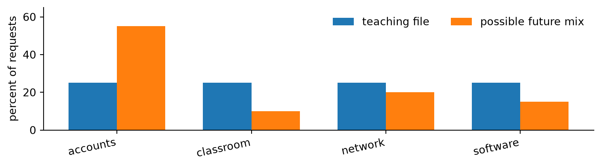
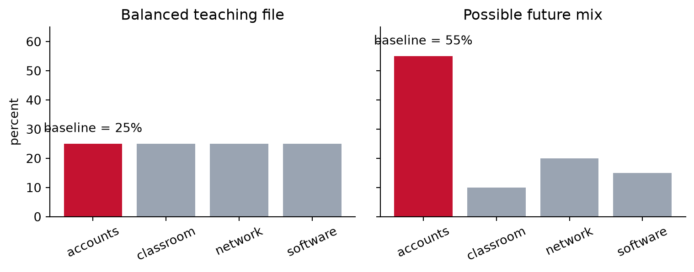
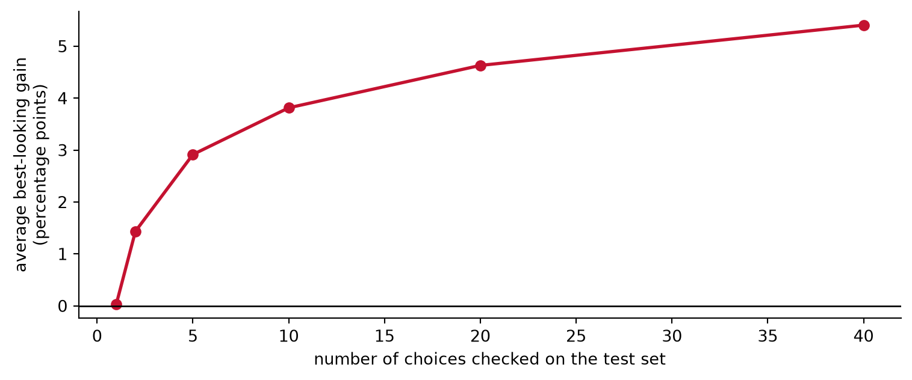

flowchart LR A[All help requests] --> B[Submitted by email] B --> C[Exactly one queue<br/>recorded per ticket] C --> D[Queue is one of<br/>four selected] D --> E[Teaching file]
Statistical design to plan a useful experiment
By the end of the semester, you should be able to turn
“Is the new AI model better?”
into a plan that another analyst could carry out without guessing what you meant.
Today is our first focused practice with that larger goal. We will decide how to:
A university help desk receives short email requests. Staff members assign one of four queues:
A simple model uses word counts as features to predict one of the four queues. A proposed language model predicts the same outcome. In either case, a staff member reviews the recommended queue before making the final choice.
Opening question: What would you need to know before “82% accurate” told you anything useful?
“82% accurate” leaves several questions unanswered:
The evaluation plan supplies the meaning that the number lacks.
Consider this request:
“My classroom computer connects to Wi-Fi, but the statistics software will not open.”
A staff member records software. Another reasonable staff member might start with classroom technology or network access.
The stored label tells us how this request was routed in the data. It is not proof that there is a real ground-truth queue for the request.
The model can learn to reproduce recorded decisions without proving those decisions were consistent, fair, or useful.
| Question | Help-desk example |
|---|---|
| What is one row in the dataset? | one help-desk ticket |
| What outcome is recorded for that ticket? | queue assigned by a staff member |
| What does the model predict? | that recorded queue |
| How might the model be used? | recommend a queue for staff review |
| What larger outcome might we care about? | faster, correct resolution |
Accuracy at predicting the recorded queue does not by itself show that requests are resolved faster.
This is a claim boundary: a clear line between what the study measures and a larger claim it cannot establish.
flowchart LR A[All help requests] --> B[Submitted by email] B --> C[Exactly one queue<br/>recorded per ticket] C --> D[Queue is one of<br/>four selected] D --> E[Teaching file]
Each arrow applies another filter. “Exactly one queue” means one queue label per ticket. The next step keeps tickets whose label is accounts, classroom technology, network access, or software.
The resulting dataset may not describe phone calls, walk-in requests, tickets with several queue labels, or tickets from other queues.
Suppose the teaching file contains 100 requests from each queue. In actual use, accounts requests may be much more common.

Deliberately selected cases, whether balanced or chosen because they are hard, do not show deployment frequencies.
Broad question
Is the language model better?
Answerable question
For new email requests in these four queues, how much more often does the language model predict the actual queue than the word-count model?
Quantity we want to learn
\[ \text{accuracy of language model on new requests} -\text{accuracy of word-count model on new requests}. \]
The statistical name for the quantity a study is designed to learn is the estimand. The plain-language description comes first.
Statistics-book reference: Burns, Foundations for a Statistical Mindset, §1.3.1, distinguishes the estimand from the estimator and the resulting estimate.
| Part | What it does | Help-desk example |
|---|---|---|
| Research question | says what we want to learn | How much better is the language model for new requests? |
| Hypothesis | states what we expect | We expect a positive and useful improvement. |
| Quantity | says exactly what will be compared | Accuracy difference on the same new requests |
“The language model is better” is not yet a complete hypothesis unless better, for whom, and by how much can be checked.
For an evaluation, ask who will use the result and what decision it could change.
flowchart LR A["Baseline<br/>ignores the email text"] -->|"Signal check<br/>Do the words help?"| B["Simple text model<br/>word counts"] B -->|"Upgrade check<br/>Does complexity help enough?"| C["Language model"] classDef baseline fill:#f3f4f6,stroke:#667085,color:#252525,stroke-width:2px; classDef simple fill:#e8f4ff,stroke:#155a8a,color:#252525,stroke-width:2px; classDef complex fill:#fae9ed,stroke:#c41230,color:#252525,stroke-width:2px; class A baseline; class B simple; class C complex;
These are different questions with different comparison points.
A baseline is the reference method that a fitted model must beat. Ours ignores the email text and always predicts the most common queue. Homework 3 calls this particular baseline the no-information rule.

The baseline accuracy depends on the category mix among the cases being evaluated.
\[ \text{accuracy} =\frac{\text{number assigned the recorded category}} {\text{number of evaluated cases}}. \]
If 72 of 100 requests receive the recorded queue, accuracy is 72%.
Accuracy weights requests equally. Therefore, common queues have more influence when the evaluation data are not balanced.
For queue \(k\), recall is the multiclass version of sensitivity:
\[ \operatorname{Recall}_k = \frac{\#\{\text{requests actually in queue }k\text{ and predicted as }k\}} {\#\{\text{requests actually in queue }k\}}. \]
With \(K\) queues, average recall gives each queue equal weight:
\[ \text{average recall}=\frac{1}{K}\sum_{k=1}^{K}\operatorname{Recall}_k. \]
For queue recalls \(0.92\), \(0.48\), \(0.74\), and \(0.66\):
\[ \text{average recall}=\frac{0.92+0.48+0.74+0.66}{4}=0.70. \]
Average recall is also called macro recall or balanced accuracy. Unlike ordinary accuracy, each queue contributes one fourth of this result.
Accuracy may fit when:
Average recall may fit when:
Choose the main metric before seeing which one makes a model look best.
Suppose the language model costs more to run and is harder to explain.
| Improvement over simple model | Possible decision |
|---|---|
| 0.2 percentage points | probably not worth changing |
| 2 percentage points | might justify a small pilot |
| 8 percentage points | strong reason to investigate further |
A practical threshold is the minimum improvement that would change the decision. Choose it before opening the test results.
There is no universal correct threshold. The reason should connect to costs, risks, workload, or benefits in the intended use.
Suppose we chose 2 percentage points as the minimum useful improvement. Our rule could be:
flowchart LR
A{Do the words help?} -->|no| B[Stop]
A -->|yes| C{Does complexity help enough?}
C -->|no| D[Keep simple model]
C -->|yes| E[Consider a reviewed pilot]
The exact threshold is a decision choice. The two-step structure is the key.
For independent groups \(A\) and \(B\), a two-sample \(t\)-test starts with
\[ \widehat{\Delta}=\bar Y_B-\bar Y_A, \qquad \widehat{\operatorname{Var}}(\widehat{\Delta}) =\frac{s_B^2}{n_B}+\frac{s_A^2}{n_A}. \]
That variance formula works because outcomes in group \(A\) are independent of outcomes in group \(B\).
In our evaluation, each request is scored by both models. If \(C_i\) is the complex model’s correctness indicator and \(S_i\) is the simple model’s, then
\[ \operatorname{Var}(\bar C-\bar S) =\operatorname{Var}(\bar C)+\operatorname{Var}(\bar S) -2\operatorname{Cov}(\bar C,\bar S). \]
The covariance is not zero: easy requests tend to be easy for both models. Treating the accuracies as independent throws away information and gives the wrong standard error.
Define \(D_i=C_i-S_i\). Each request now contributes one paired outcome:
| Simple \(S_i\) | Complex \(C_i\) | Difference \(D_i\) | Meaning |
|---|---|---|---|
| 1 | 1 | 0 | both correct |
| 0 | 1 | +1 | only complex is correct |
| 1 | 0 | −1 | only simple is correct |
| 0 | 0 | 0 | both wrong |
\[ \widehat{\Delta}=\bar D =\frac{n_{01}-n_{10}}{n}, \qquad \widehat{\operatorname{SE}}(\bar D)=\frac{s_D}{\sqrt n}. \]
flowchart LR A[Training data<br/>fit words and model] --> B[Validation data<br/>choose settings] B --> C[Lock every choice] C --> D[Test data<br/>evaluate once]
| Data | What it may do |
|---|---|
| Training | learn text features and fit the model |
| Validation | choose among allowed settings and rules |
| Test | compare the finished methods once |
The test set is not another source of feedback for improving the model.
Imagine that none of 40 analysis choices truly improves performance. Random noise still makes the best-looking choice appear positive.

The test set becomes part of model development as soon as its result changes a choice.
| Split | The question it asks |
|---|---|
| Random rows | How does the model perform on another request from roughly the same mix? |
| By time | How does it perform later, when wording or queue frequencies may have changed? |
| By group | How does it perform for a person, site, or template not seen during fitting? |
None is always best. The intended use tells us which test is relevant.
A distribution describes the mix of requests we see: their wording \(X\), their actual queues \(Y\), and the relationship between the two.
| Data | Distribution we want | Why |
|---|---|---|
| Training | older requests, deliberately balanced across queues | give the model enough examples from every queue |
| Test | later requests in their naturally occurring mix | estimate performance for the requests the system would actually receive |
Therefore, we expect
\[ P_{\text{train}}(X,Y) \ne P_{\text{test}}(X,Y). \]
This is a distribution change (often called distribution shift), and here it is intentional. A random-row split tries to make training and test look similar. We instead want the test distribution to resemble future use, not the training sample.
| Expected future setting | Appropriate test split |
|---|---|
| Roughly the same distribution; no important new-group problem | random rows |
| Distribution may change over time | later time period |
| New people, sites, or templates matter | hold out whole groups |
| Both time and groups may change | combine time and group rules |
The first row is the neither case. A random-row split assumes future requests behave like another random sample from roughly the same distribution as the available requests. That is a substantive assumption—not a neutral default.
A time split does not automatically keep groups separate. A group split does not automatically test change over time. State what change the split is meant to represent and what it leaves unchanged.
Data leakage occurs when information reserved for final evaluation moves backward into model development. Name what moved and what it changed:
| Test information | Path into the analysis | What it changes |
|---|---|---|
| words in test requests | build the vocabulary using all text | the model’s input features |
| test scores | keep trying settings until the score rises | the selected model |
| test labels | combine queues after comparing results | the outcome being predicted |
| subgroup results | report the subgroup with the largest gap | the claim being emphasized |
“There is leakage” is incomplete. A useful diagnosis identifies the information, the path it followed, and the choice it influenced.
TF-IDF learns its vocabulary and word weights from the training text. Those learned choices belong inside the fitted model.
from sklearn.pipeline import make_pipeline
from sklearn.feature_extraction.text import TfidfVectorizer
from sklearn.linear_model import LogisticRegression
model = make_pipeline(
TfidfVectorizer(min_df=2),
LogisticRegression(max_iter=2000),
)
model.fit(training_text, training_label)
validation_prediction = model.predict(validation_text)fit learns both the vocabulary and classifier from training text. predict applies those frozen choices to validation text.
Words that appear only in validation or test have no TF-IDF column and are ignored. Under distribution change, new product names or new terminology may therefore disappear from the model’s input. During EDA, examine vocabulary coverage using training and validation data, decide how to handle it, and then leave the final test alone.
| Cleaning decision | Statistical consequence |
|---|---|
| Drop blank or very short requests | changes which future requests the claim covers |
| Remove repeated templates | changes how common request types are weighted |
| Combine queues | changes the outcome, errors, and baseline |
| Remove signatures or boilerplate | changes the information available to the model |
Cleaning is not neutral housekeeping when it changes the cases, features, or outcome. Use EDA to justify the rule, state what it changes, and fix it before the final test.
This is familiar EDA: inspect counts, missingness, repeated text, changes over time, and questionable labels before fitting a model.
| EDA finding | Statistical design response |
|---|---|
| queues have very different frequencies | choose a baseline and metrics that match the intended use |
| templates or people repeat | decide whether groups must remain together |
| vocabulary changes over time | use a time split and report vocabulary coverage |
| phone and walk-in requests are absent | narrow the target or collect those cases |
| the recorded queue is debatable | define the label and describe its limits |
EDA can expose these problems. Statistical design determines the target, sampling, split, processing, comparisons, and claims that follow.
For this week, focus on four parts of Mitchell et al.’s model-card framework:
| Part | Question to answer |
|---|---|
| Intended use | Who uses the output, for what task, and with what review? |
| Metrics | What is measured, why, and with what uncertainty? |
| Evaluation data | Which cases were used, and how were they processed? |
| Caveats | What use or conclusion is not supported? |
This is not paperwork added after modeling. It is a compact record of the evaluation design.
| Decision | Help-desk plan |
|---|---|
| Prediction | recorded queue for one email request |
| Intended use | recommendation reviewed by help-desk staff |
| Cases described | later email requests in the same four queues |
| Main metric | accuracy; also inspect recall by queue |
| First comparison | simple word model minus baseline |
| Second comparison | language model minus simple word model |
| Data roles | older training, later validation, newest locked test |
| Decision rule | require clear signal, then a useful gain chosen in advance |
| Out of scope | automatic routing or claims about faster resolution |
If one answer is missing, an AI assistant or analyst will fill it in. The unstated choice may be reasonable, but it will not necessarily be yours.
For the help-desk routing project, choose the test split that best matches each intended use:
Then explain in one sentence why a narrow uncertainty interval cannot compensate for an evaluation sample drawn from the wrong group of cases.
We will start with a plausible but underspecified AI-generated plan.
Then we will: